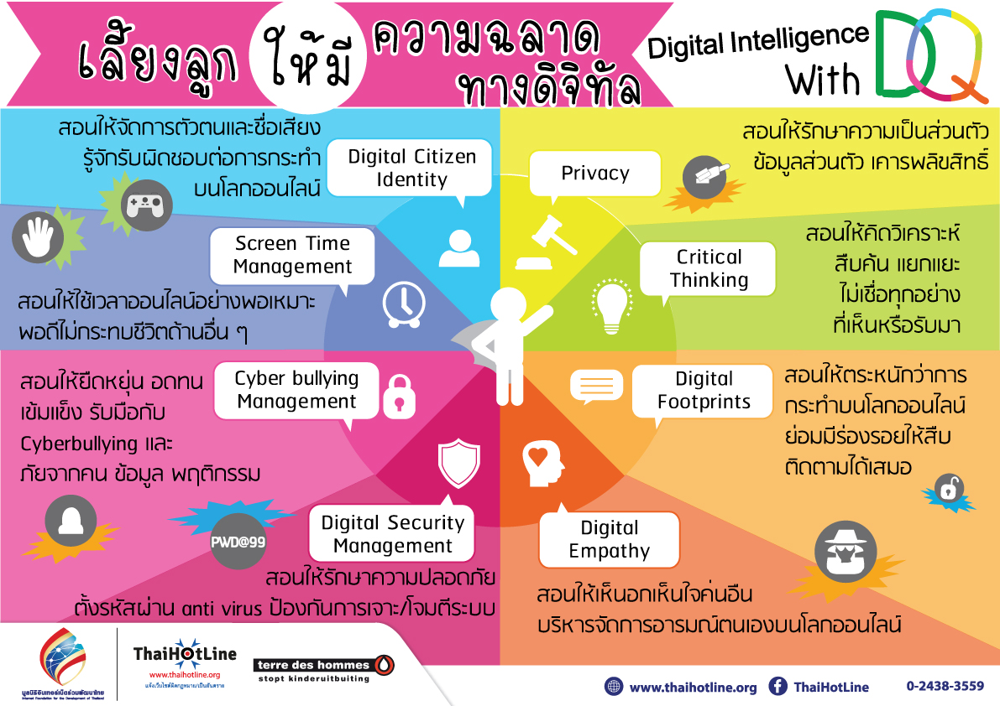

ความฉลาดทางดิจิทัล (DQ: Digital Intelligence Quotient) คือ กลุ่มความสามารถทางสังคม อารมณ์ และการรับรู้ ที่จะท าให้คนคนหนึ่งสามารถเผชิญกับความท้าทายของชีวิตดิจิทัล และสามารถ ปรับตัวให้เข้ากับชีวิตดิจิทัลได้ ความฉลาดทางดิจิทัลครอบคลุมทั้งความรู้ ทักษะ ทัศนคติและค่านิยม ที่จ าเป็นต่อการใช้ชีวิตในฐานะสมาชิกของโลกออนไลน์
